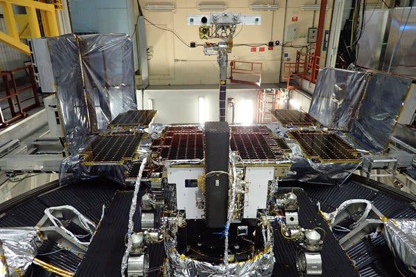
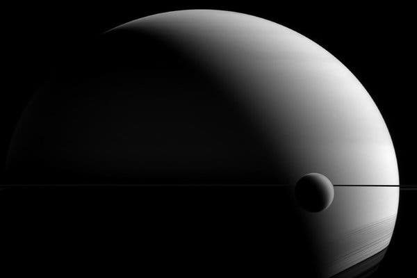
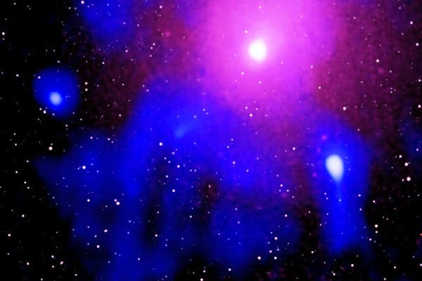
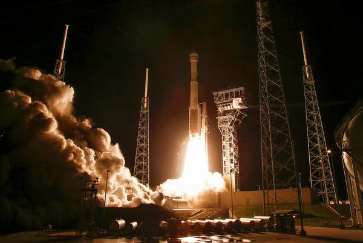
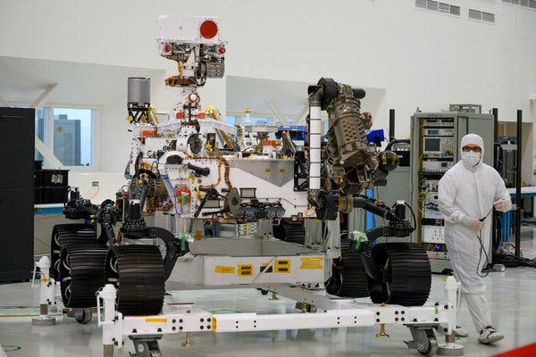
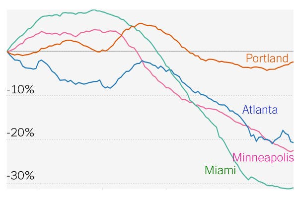

Alan Guth was one of the first physicists to hypothesize the existence of inflation, which
explains how the universe expanded so uniformly and so quickly in the instant after the Big Bang
13.8
billion years ago. Rick Friedman for The New York Times
By Dennis Overbye
March 17, 2014
615
CAMBRIDGE, Mass. — One night late in 1979, an itinerant young physicist named Alan Guth, with
a new
son
and a year’s appointment at Stanford, stayed up late with his notebook and equations, venturing far
beyond the world of known physics.He was trying to understand why there was no trace of some exotic particles that should have been
created in the Big Bang. Instead he discovered what might have made the universe bang to begin with. A
potential hitch in the presumed course of cosmic evolution could have infused space itself with a
special energy that exerted a repulsive force, causing the universe to swell faster than the speed of
light for a prodigiously violent instant.If true, the rapid engorgement would solve paradoxes like why the heavens look uniform from pole to
pole and not like a jagged, warped mess. The enormous ballooning would iron out all the wrinkles and
irregularities. Those particles were not missing, but would be diluted beyond detection, like spit in
the ocean.“SPECTACULAR REALIZATION,” Dr. Guth wrote across the top of the page and drew a double box around
it.
ADVERTISEMENT
On Monday, Dr. Guth’s starship came in. Radio astronomers reported that they had seen the
beginning
of the Big Bang, and that his hypothesis, known undramatically as inflation, looked right.Reaching back across 13.8 billion years to the first sliver of cosmic time with
telescopes at the
South Pole, a team of astronomers led by John M. Kovac of the Harvard-Smithsonian Center for
Astrophysics detected ripples in the fabric of space-time — so-called gravitational
waves
— the
signature of a universe being wrenched violently apart when it was roughly a trillionth of a
trillionth
of a trillionth of a second old. They are the long-sought smoking-gun evidence of inflation, proof,
Dr.
Kovac and his colleagues say, that Dr. Guth was correct.
Inflation has been the workhorse of cosmology for 35 years, though many, including Dr. Guth,
wondered
whether it could ever be proved.If corroborated, Dr. Kovac’s work will stand as a landmark in science comparable to the recent
discovery of dark energy pushing the universe apart, or of the Big Bang itself. It would open vast
realms of time and space and energy to science and speculation.Confirming inflation would mean that the universe we see, extending 14 billion light-years in
space
with its hundreds of billions of galaxies, is only an infinitesimal patch in a larger cosmos whose
extent, architecture and fate are unknowable. Moreover, beyond our own universe there might be an
endless number of other universes bubbling into frothy eternity, like a pot of pasta water boiling
over.
ADVERTISEMENT
‘As Big as It Gets’In our own universe, it would serve as a window into the forces operating at energies forever
beyond the reach of particle accelerators on Earth and yield new insights into gravity itself. Dr.
Kovac’s ripples would be the first direct observation of gravitational waves, which, according to
Einstein’s theory of general relativity, should ruffle space-time.Marc Kamionkowski of Johns Hopkins University, an early-universe expert who was not part of the
team, said, “This is huge, as big as it gets.”He continued, “This is a signal from the very earliest universe, sending a telegram encoded in
gravitational waves.”The ripples manifested themselves as faint spiral patterns in a bath of microwave radiation
that
permeates space and preserves a picture of the universe when it was 380,000 years old and as hot as
the
surface of the sun.Dr. Kovac and his collaborators, working in an experiment known as Bicep, for Background
Imaging of
Cosmic Extragalactic Polarization, reported their results in a scientific briefing at the Center for
Astrophysics here on Monday and in a set of papers submitted to The Astrophysical Journal.
The Theory of InflationAstronomers have found evidence to support the theory of inflation, which explains
how
the universe
expanded so uniformly and so quickly in the instant after the Big Bang 13.8 billion years ago.
THE UNIVERSE is just under 14 billion years old. From our position in the
Milky Way galaxy, we
can observe a sphere that is now about 92 billion light-years across. But there's a mystery.
Wherever we look, the universe has an even temperature.
NOT ENOUGH TIME The universe is not old enough for light to have traveled
the
vast distance
from one side of the universe to the other, and there has not been enough time for scattered
patches
of hot and cold to mix into an even temperature.
DISTANT COFFEE At a smaller scale, imagine using a telescope to look a
mile in
one direction.
You see a coffee cup, and from the amount of steam, you can estimate its temperature and how
much it
has cooled.
COFFEE EVERYWHERE Now turn around and look a mile in the other direction.
You
see a similar
coffee cup, at exactly the same temperature. Coincidence? Maybe. But if you see a similar cup in
every direction, you might want to look for another explanation.
STILL NOT ENOUGH TIME There has not been enough time to carry coffee cups
from
place to place
before they get cold. But if all the coffee cups were somehow filled from a single coffee pot,
all
at the same time, that might explain their even temperature
INFLATION solves this problem. The theory proposes that, less than a
trillionth of a second
after the Big Bang, the universe expanded faster than the speed of light. Tiny ripples in the
violently expanding energy field eventually grew into the large-scale structures of the
universe.
FLUCTUATION Astronomers have now detected evidence of these ancient
fluctuations in swirls of
polarized light in the cosmic background radiation, which is energy left over from the early
universe. These are gravitational waves predicted by Einstein.
EXPANSION Returning to our coffee, imagine a single, central pot expanding
faster than light
and cooling to an even temperature as it expands. That is something like inflation. And the
structure of the universe mirrors the froth and foam of the original pot.
By LARRY BUCHANAN and JONATHAN CORUM
Dr. Kovac said the chance that the results were a fluke was only one in 10 million.Dr. Guth, now 67, pronounced himself “bowled over,” saying he had not expected such a definite
confirmation in his lifetime.
ADVERTISEMENT
“With nature, you have to be lucky,” he said. “Apparently we have been lucky.”The results are the closely guarded distillation of three years’ worth of observations and
analysis. Eschewing email for fear of a leak, Dr. Kovac personally delivered drafts of his work to a
select few, meeting with Dr. Guth, who is now a professor at Massachusetts Institute of Technology (as
is his son, Larry, who was sleeping that night in 1979), in his office last week.“It was a very special moment, and one we took very seriously as scientists,” said Dr. Kovac, who
chose his words as carefully as he tended his radio telescopes.Andrei Linde of Stanford, a prolific theorist who first described the most popular variant of
inflation, known as chaotic inflation, in 1983, was about to go on vacation in the Caribbean last week
when Chao-Lin Kuo, a Stanford colleague and a member of Dr. Kovac’s team, knocked on his door
with a
bottle of Champagne to tell him the news.
Stanford Professor Andrei Linde celebrates physics breakthrough Video by
StanfordUniversity
Confused, Dr. Linde called out to his wife, asking if she had ordered anything.“And then I told him that in the beginning we thought that this was a delivery but we did not think
that we ordered anything, but I simply forgot that actually I did order it, 30 years ago,” Dr. Linde
wrote in an email.
Calling from Bonaire, the Dutch Caribbean island, Dr. Linde said he was still hyperventilating. “Having
news like this is the best way of spoiling a vacation,” he said.
By last weekend, as social media was buzzing with rumors that inflation had been seen and news spread,
astrophysicists responded with a mixture of jubilation and caution.
ADVERTISEMENT
Max Tegmark, a cosmologist at M.I.T., wrote in an email, “I think that if this stays true, it will go
down as one of the greatest discoveries in the history of science.”
John E. Carlstrom of the University of Chicago, Dr. Kovac’s mentor and head of a competing project
called the South Pole Telescope, pronounced himself deeply impressed. “I think the results are beautiful
and very convincing,” he said.Paul J. Steinhardt of Princeton, author of a competitor to inflation that posits the clash of a
pair of universes as the cause of genesis, said that if true, the Bicep result would eliminate his
model, but he expressed reservations about inflation.Lawrence M. Krauss of Arizona State and others also emphasized the need for confirmation, noting
that the new results exceeded earlier estimates based on temperature maps of the cosmic background by
the European Space Agency’s Planck satellite and other assumptions about the universe.“So we will need to wait and see before we jump up and down,” Dr. Krauss said.Corroboration might not be long in coming. The Planck spacecraft will report its own findings this
year. At least a dozen other teams are trying similar measurements from balloons, mountaintops and
space.Spirals in the Sky
Gravity waves are the latest and deepest secret yet pried out of the cosmic microwaves, which were
discovered accidentally by Arno Penzias and Robert Wilson at Bell Labs 50 years ago. They won the Nobel
Prize.
Dr. Kovac has spent his career trying to read the secrets of these waves. He is one of four leaders
of Bicep, which has operated a series of increasingly sensitive radio telescopes at the South Pole,
where the thin, dry air creates ideal observing conditions. The others are Clement Pryke of the
University of Minnesota, Jamie Bock of the California Institute of Technology and Dr. Kuo of Stanford.
ADVERTISEMENT
“The South Pole is the closest you can get to space and still be on the ground,” Dr. Kovac said. He
has been there 23 times, he said, wintering over in 1994. “I’ve been hooked ever since,” he said.
The Bicep2 telescope, in the foreground, was used to detect the faint spiraling gravity patterns —
the
signature of a universe being wrenched violently apart at its birth. Steffen Richter/Associated Press
In 2002, he was part of a team that discovered that the microwave radiation was polarized, meaning
the light waves had a slight preference to vibrate in one direction rather than another.This was a step toward the ultimate goal of detecting the gravitational waves from inflation. Such
waves, squeezing space in one direction and stretching it in another as they go by, would twist the
direction of polarization of the microwaves, theorists said. As a result, maps of the polarization in
the sky should have little arrows going in spirals.Detecting those spirals required measuring infinitesimally small differences in the temperature of
the microwaves. The group’s telescope, Bicep2, is basically a giant superconducting thermometer.
“We had no expectations what we would see,” Dr. Kovac said.The strength of the signal surprised the researchers, and they spent a year burning up time on a
Harvard supercomputer, making sure they had things right and worrying that competitors might beat them
to the breakthrough.A Special TimeThe data traced the onset of inflation to a time that physicists like Dr. Guth, staying up late in
his Palo Alto house 35 years ago, suspected was a special break point in the evolution of the universe.
ADVERTISEMENT
Make that free lunches. Most of the hundred or so models resulting from Dr. Guth’s original vision
suggest that inflation, once started, is eternal. Even as our own universe settled down to a comfortable
homey expansion, the rest of the cosmos will continue blowing up, spinning off other bubbles endlessly,
a concept known as the multiverse.So the future of the cosmos is perhaps bright and fecund, but do not bother asking about going any
deeper into the past.We might never know what happened before inflation, at the very beginning, because inflation erases
everything that came before it. All the chaos and randomness of the primordial moment are swept away,
forever out of our view.“If you trace your cosmic roots,” said Abraham Loeb, a Harvard-Smithsonian astronomer who was not
part of the team, “you wind up at inflation.”
A version of this article appears in print on March 18, 2014, Section A, Page 1 of the
New York
edition with the headline: Space Ripples Reveal Big Bang’s Smoking Gun. Order Reprints |
Today’s Paper | Subscribe
More in Space and Astronomy
Giant Magellan Telescope
American Astronomy’s Future Goes on Trial in Washington
March 13

European Space Agency
Coronavirus, Testing Delays Push Europe-Russia Mars Mission to 2022
March 12

JPL/NASA
Why Didn’t Saturn Eat Titan, Its Biggest Moon?
March 10

Chandra X-Ray Observatory
This Black Hole Blew a Hole in the Cosmos
March 6

Joe Skipper/Reuters
‘Close Call’: NASA-Boeing Investigation of Starliner Flight Finds Lapses
March 6

Robyn Beck/Agence France-Presse — Getty Images
NASA’s Mars 2020 Rover Gets New, Official Name: Perseverance
March 5
Editors’ Picks

Photo Illustration by Tracy Ma/The New York Times; Getty Images
The Talented Mr. Philbrick
March 13
Randy Holmes/Walt Disney Television, via Getty Images
The ‘Man Show’ Diaspora
March 13
Christopher Simpson for The New York Times
Don’t Toss This Food Scrap (It Could Be Vastly Improving Your Dishes)
March 13
ADVERTISEMENT
Registered readers can access important updates on coronavirus